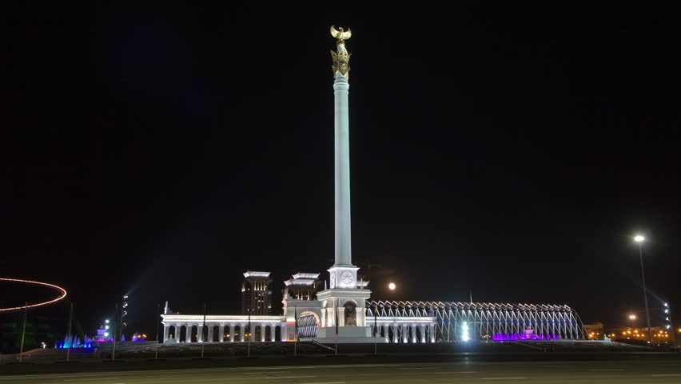

Фотосурет уақытша жүктелмеді')">«Қазақ елі» монументі Қазақстанның мемлекеттілігі мен тәуелсіздік идеясын бейнелейді. Сәулеттік композиция ұлттық тарих пен мәдени құндылықтарға назар аударады.
Қосымша ақпарат: www.gov.kz
Сурет: https://astana.citypass.kz/en/attractions/monument-kazakh-eli